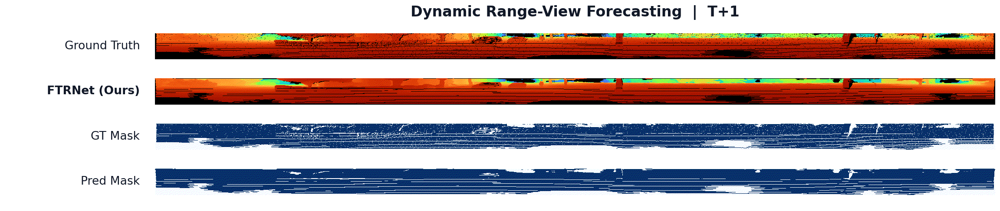
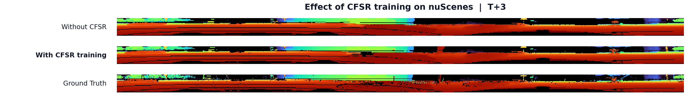

FTRNet
Overview
Point cloud prediction aims to infer future 3D scene geometry from a sequence of past LiDAR observations, providing foresighted perception for downstream planning and decision making. FTRNet performs multi-step prediction in the range-view representation: given past LiDAR range views, it predicts multiple future range views and validity masks in parallel, which are subsequently back-projected to obtain future point clouds.
FTRNet revisits point cloud prediction from the perspective of temporal relationships among future predictions. It focuses on two complementary relationships: differences among future moments within the same forecast origin, and overlapping predictions of the same future moment across adjacent forecast origins.

Method

FTRNet first models historical temporal context from past range views. Current geometry is then combined with learnable horizon embeddings to construct horizon-conditioned future representations before decoding. In addition, Cross-Origin Future Scene Refinement (CFSR) exploits overlapping predictions generated from adjacent forecast origins during training and uses their disagreement for selective refinement.
CFSR is used only during training and introduces no additional refinement stage at inference.
Qualitative Analysis

Compared with ATPPNet, FTRNet preserves scene boundaries and local geometric contours more completely at both prediction horizons. The difference becomes more visible at T+5, where prediction errors accumulate and long-horizon geometry is more difficult to maintain. FTRNet still retains the main geometric structure of the future scene, reducing the structural deviation observed at the longer horizon.
Quantitative Analysis
KITTI Odometry
| Method | Mean Range Loss | Mean CD |
|---|---|---|
| TCNet | 0.771 | 0.387 |
| PCPNet-Sem. | 0.719 | 0.365 |
| ATPPNet | 0.663 | 0.335 |
| PCPMamba | 0.615 | 0.298 |
| FTRNet | 0.567 | 0.255 |
On KITTI Odometry, FTRNet achieves the lowest mean Range Loss and Chamfer Distance among the compared methods. Relative to PCPMamba, the mean Range Loss decreases from 0.615 to 0.567 (about 7.8%), while the mean CD decreases from 0.298 to 0.255 (about 14.4%). The consistent improvements in both metrics indicate that the gain in range-view prediction also translates into improved reconstructed 3D geometry on KITTI.
nuScenes
| Method | Mean Range Loss | Mean CD |
|---|---|---|
| TCNet | 0.719 | 1.389 |
| PCPNet-Sem. | 0.704 | 1.360 |
| ATPPNet | 0.598 | 0.932 |
| PCPMamba | 0.619 | 0.523 |
| FTRNet | 0.379 | 0.646 |
On nuScenes, FTRNet substantially reduces the mean Range Loss to 0.379, compared with 0.619 for PCPMamba, corresponding to a reduction of about 38.8%. However, the two methods exhibit a different trend in Chamfer Distance, where PCPMamba obtains a lower mean CD.
This discrepancy highlights that Range Loss and Chamfer Distance capture complementary aspects of point cloud prediction. Range Loss evaluates radial prediction errors in the range-view representation, whereas Chamfer Distance is computed after back-projection and is additionally affected by the spatial distribution and validity of the reconstructed points. Consequently, improved range-view accuracy does not necessarily translate proportionally into lower 3D Chamfer Distance.
Because the PCPMamba implementation and predictions are not publicly available, we treat this as a metric-level observation rather than attributing the difference to a specific internal mechanism.
CFSR Analysis on nuScenes
| Variant | Mean CD |
|---|---|
| w/o CFSR | 0.720 |
| FTRNet | 0.646 |
Removing CFSR increases the mean Chamfer Distance from 0.646 to 0.720 on nuScenes. Equivalently, training with CFSR reduces mean CD by about 10.3% relative to the variant without CFSR.
CFSR exploits overlapping predictions from adjacent forecast origins only during training, using their disagreement for selective refinement. The inference pipeline itself remains unchanged.
CFSR shows a more pronounced improvement on nuScenes than on KITTI. One possible explanation is the sparser range-view representation of nuScenes, where predictions from a single forecast origin contain less dense geometric evidence. In this setting, overlapping predictions from adjacent origins can provide more complementary supervision, making cross-origin disagreement more informative during training. This may partly explain why the benefit of CFSR is larger on nuScenes.

Citation
Citation information will be provided upon publication.